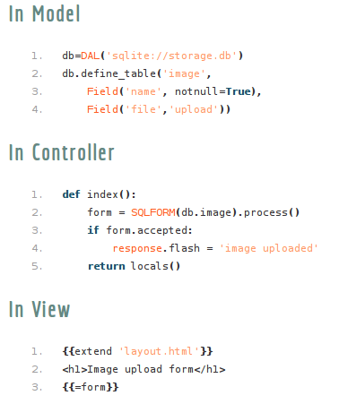
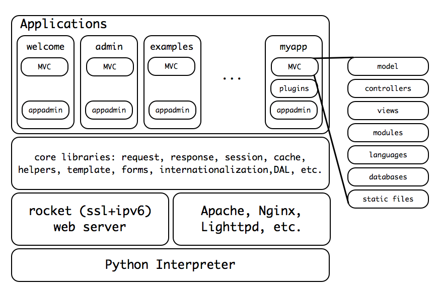

Gabriela Amaral, Lucas Lentini, Pedro Victor e Rogerio Dias
O que é?
Framework open source para desenvolvimento ágil, escalável, seguro e portável, para aplicações orientadas a banco de dados. Escrito e programado em Python.
Por que usar?
- Fácil de usar
- Não quebra compatibilidade com versões antigas
- Segurança
- Leve
- Sofisticada camada de abstração de banco de dados
Portável e multiplataforma
Roda em Windows, Mac, Unix/Linux, Google App Engine, Amazon EC2, e outros serviços de web hosting como Python Anywhere. Depende apenas da instalação de um interpretador Python.
Servidor Rocket incluído
Servidor WSGI tão rápido e responsivo quanto Apache e tem suporte a IPV6 e SSL.
Bootstrap
Pouca ou nenhuma preocupação com CSS e esquemas de estilo. Esquemas de folhas de estilo pré-definidas e padronizadas.

SQLite
Banco de dados SQLite incluído por padrão.
MVC
Model-View-Controller, separação entre dados e apresentação das aplicações, de forma a garantir a independência das alterações das partes, isto é, uma alteração em um layout não interefere na manipulação dos dados.
Separação de dados de uma aplicação web2py
Como funciona?

Arquitetura do Web2Py

Demonstração do Framework
Referências